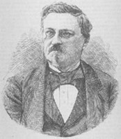

Inici
Vídeos
Llibres
Contacte
AUTORS I OBRES PRINCIPALS
Human Action: A Treatise on Economics. 1949
Planning for Freedom. 1952
The Anti-Capitalistic Mentality. 1956
Ludwig von Mises
Friederich von Hayek
The Road to Serfdom. 1944
The Fatal Conceit. 1988
Law, Legislation and Liberty. 1973
Anarchy, State and Utopia. 1974
The Nature of Rationality. 1993
Socratic Puzzles. 1997
Robert Nozick
The Economics and Ethics of Private Property. 2006
Democracy: The God that Failed. 2001
The Myth of National Defense. 2003
Hans Herman
Hoppe
Man, Economy, and State. 1962
Egalitarism as a Revolt Against Nature. 2000
The Ethics of Liberty. 1982
Murray Rothbard
The Ethics of Redistribution. 1951
Sovereignty: An Inquiry into the Political Good. 1957
The Pure Theory of Politics. 1963
Bertrand de
Jouvenel

De la production de la sécurité. 1849
The Utopia of Liberty. 1848
L’Évolution politique et la révolution. 1884
Gustave de Molinari